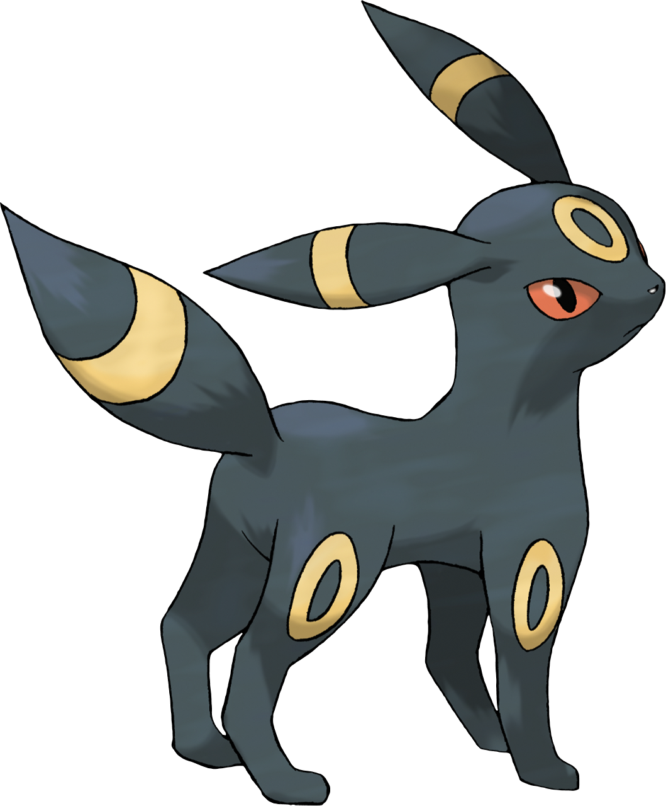
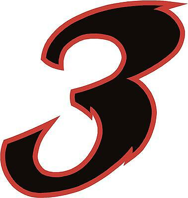
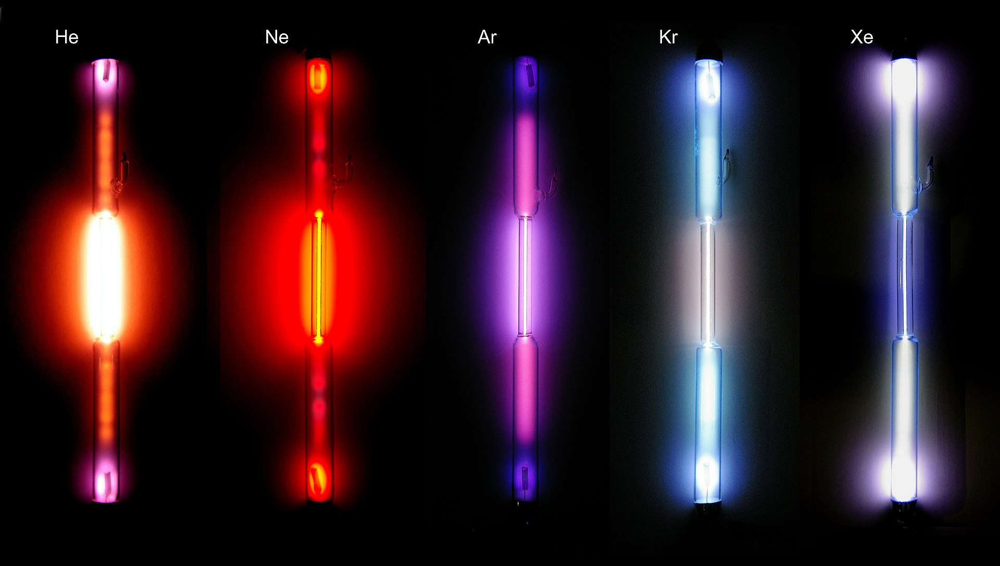
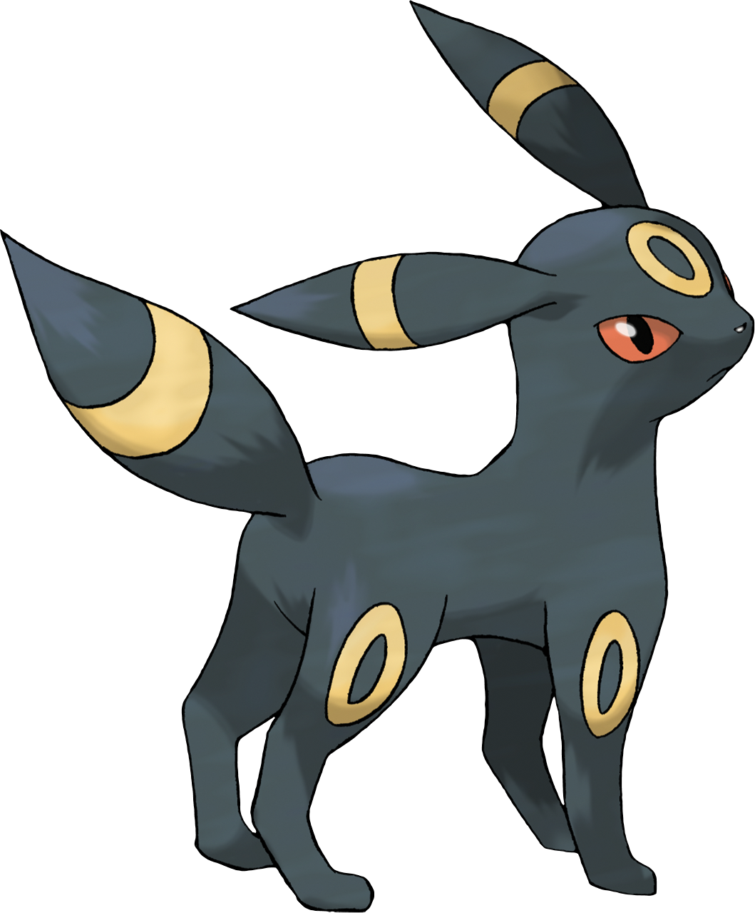

| des raisons de pourquoi Nantes est en Bretagne |  |
Bravo !
Vous êtes quand même bizarre...


A toi aussi, pauvre stagiaire, Jordan te martyrise fait progresser et te fait faire des tops 10... Toi aussi, tu n'as pas d'idées et tu demandes a chatgpt une solution... Et bien le voici, l'ultime tableau des top 10 nuls à faire pour ne pas briller en société
| Numero | top 10... | Commentaires | Images, vidéos & liens | ||
|---|---|---|---|---|---|
| 1 |
|
Tout le monde sait que Nantes n'est pas en Bretagne, mais un petit village d'irreductible y croit dur comme fer... | Wikipedia l'a dit donc c'est vrai | ||
| 2 | Des chiffres | D'ailleurs, le 7eme va vous étonner... |  | ||
| 3 | Des Gaz | Si vous arrivez a trouver 10 raisons pour classer ces deux themes là, je vous dit : Bravo ! Vous êtes quand même bizarre... |
 | ||
| Des Elements chimiques | |
||||
| 4 | Des evolis | Quel manque d'originalité... En plus tout le monde sait que le top1, c'est :  |